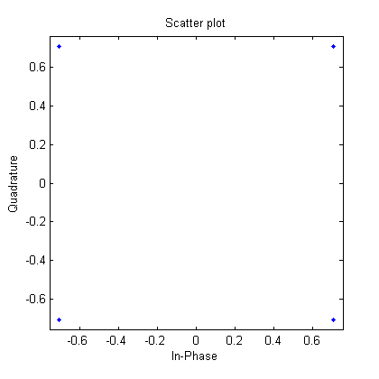
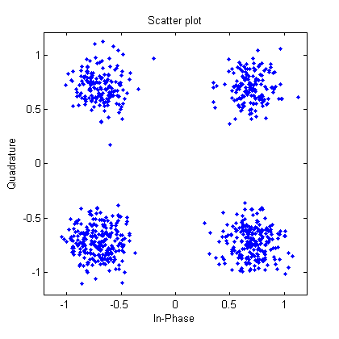
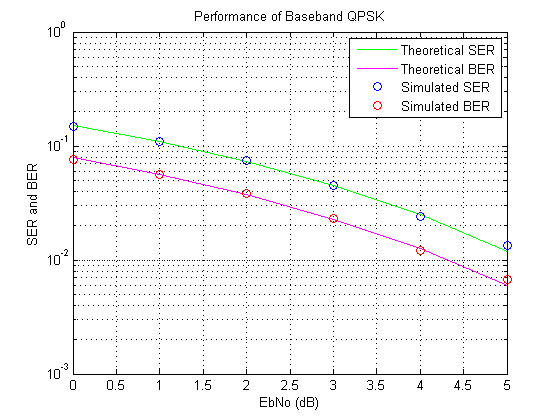

Phase Shift Keying Simulation
This demo shows how to simulate a basic Quaternary Phase Shift Keying (QPSK) communication link, and to generate empirical performance curves that can be compared to theoretical predictions.
Contents
Initializing Variables
The first step is to initialize variables for number of samples per symbol, number of symbols to simulate, alphabet size (M) and the signal to noise ratio. We create a local random stream with known seed and state to be used by random number generators. Using this local stream ensures that the results generated by this demo will be repeatable.
nSamp = 8; numSymb = 100; M = 4; SNR = 14; hStr = RandStream('mt19937ar', 'Seed', 12345);
Generating Random Information Symbols
Next, use RANDI to generate random information symbols from 0 to M-1. Since the simulation is of QPSK, the symbols are 0 through 3. The first 10 data points are plotted.
numPlot = 10; msg_orig = randi(hStr, [0 M-1], numSymb, 1); stem(0:numPlot-1, msg_orig(1:numPlot), 'bx'); xlabel('Time'); ylabel('Amplitude');

Phase Modulating the Data
Use MODEM.PSKMOD to modulate the data using QPSK modulation and Gray encoding. Upsample the symbols to a sampling rate 8 times the carrier frequency using RECTPULSE. Use SCATTERPLOT to see the signal constellation.
hMod = modem.pskmod('M', M, 'PhaseOffset', pi/4, 'SymbolOrder', 'Gray'); msg_tx = modulate(hMod, msg_orig); msg_tx = rectpulse(msg_tx,nSamp); h1 = scatterplot(msg_tx);
Creating the Noisy Signal
Then use AWGN to add noise to the transmitted signal to create the noisy signal at the receiver. Use the 'measured' option to add noise that is 14 dB below the average signal power (SNR = 14 dB). Plot the constellation of the received signal.
msg_rx = awgn(msg_tx, SNR, 'measured', hStr, 'dB'); h2 = scatterplot(msg_rx);
Recovering Information from the Transmitted Signal
Use INTDUMP to downsample to the original information rate. Then use MODEM.PSKDEMOD to demodulate the signal, and detect the transmitted symbols. The detected symbols are plotted in red stems with circles and the transmitted symbols are plotted in blue stems with x's. The blue stems of the transmitted signal are shadowed by the red stems of the received signal. Therefore, comparing the blue x's with the red circles indicates that the received signal is identical to the transmitted signal.
hDemod = modem.pskdemod('M', M, 'PhaseOffset', pi/4, 'SymbolOrder', 'Gray'); close(h1(ishghandle(h1)), h2(ishghandle(h2))); msg_rx_down = intdump(msg_rx,nSamp); msg_demod = demodulate(hDemod, msg_rx_down); stem(0:numPlot-1, msg_orig(1:numPlot), 'bx'); hold on; stem(0:numPlot-1, msg_demod(1:numPlot), 'ro'); hold off; axis([ 0 numPlot -0.2 3.2]); xlabel('Time'); ylabel('Amplitude');

Comparing Original Message to Demodulated Message
Finally, use BITERR and SYMERR to compare the original message to the demodulated message. BITERR is used to determine the bit error rate and SYMERR is used to determine the symbol error rate.
[errorBit ratioBit] = biterr(msg_orig, msg_demod, log2(M)); [errorSym ratioSym] = symerr(msg_orig, msg_demod);
Running Simulation Examples
The next step executes an example file SIMBASEBANDEX, which is a complete simulation example for QPSK. It demonstrates how to create simulation drivers in MATLAB® that plot the simulation results as they are generated.
Running the QPSK Simulation Example
The green and magenta lines are the theoretical bit error rate (BER) and symbol error rate (SER) performance curves for QPSK, respectively. The example, SIMBASEBANDEX, plots the simulated BER and SER in red and blue lines, respectively. SIMBASEBANDEX uses MODEM.PSKMOD and MODEM.PSKDEMOD to simulate PSK at baseband using a complex envelope representation of the modulated signal. For this simulation, we use the default random number stream instead of a random number stream with known state and seed. Therefore, the results may vary slightly for different runs.
simbasebandex(0:5);